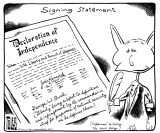

Sure, he was rich, but he wasn't particularly wise: Lydian King Croesus (enthroned) receives a visit from the Athenian lawgiver, Solon, in this depiction by the Dutch master Gerard von Honthorst.
If audacity were wealth, John C. Yoo would be richer than Croesus. But then, if wisdom were breath, he would have died of asphyxiation long ago.
Yoo has become properly notorious as a key legal architect of the Bush Regime's version of fuhrerprinzip -- the doctrine that the powers of a "war president" are essentially limitless, and include the right to order the torture of anyone upon whom he chooses to inflict such treatment, including innocent children.

He is the chief author of the so-called "Bybee Memorandum," the August 1, 2002 document that provided pseudo-legal justification for torture under the color of supposed presidential authority. (Jay S. Bybee, who signed the memo composed by Yoo, was the assistant Attorney General for the White House Office of Legal Counsel (OLC) at the time; he has since been appointed to the Ninth Circuit Court of Appeals.)
In recent days, thanks to the commendable persistence of the ACLU*, the Bush Regime has been compelled to disgorge another torture memorandum written by Yoo, this one composed on March 14, 2003. (Part one is here; part two, here.) Building seamlessly on the previous memo, this second installment in Yoo's apologia for torture was written for the apparent purpose of trumping objections to torture offered by high-ranking military personnel.
The second Yoo memo was largely a refinement of the first, differing primarily in the brazenness with which the case was made for official impunity: It asserted plenary immunity to criminal laws on behalf of those who committed acts of torture and even mutilation while acting on presidential orders. Physically maiming a detainee was described as a legally defensible tactic as long as the torturer was "fulfilling the executive branch's authority to protect the federal government and the nation from attack after the events of September 11, which triggered the nation's right to self-defense."
Thus if an intelligence officer or military interrogator were to cripple, blind, disfigure, or otherwise permanently mangle a prisoner under orders from the executive branch, he would be immune to prosecution. The same claim was made on behalf of those who tortured detainees to death.
Yoo's second memo was issued just a few days before the Bush administration attacked Iraq, and roughly a year before the disclosure of grotesque atrocities committed at Abu Ghraib -- the latter being the undeniable offspring of the policy adumbrated in the Yoo-authored memos. Commentator Marty Lederman is incontestably correct in stating that the Yoo memos, the second in particular, constitute "the source of the Nile for the abuses that occurred in Iraq in 2003."
Given that the original Yoo-authored "Bybee Memorandum" made all of the essential claims of unlimited executive power and derivative immunity for presidentially appointed torturers, why was the second one necessary? According to legal analyst Scott Horton of Harper's, the second memo was part of an effort by the deranged neo-"conservatives" running the "war on terror" to bring the military to heel.
From the beginning of the "war on terror," Horton observes, interrogators were authorized to employ torture at Gitmo and Afghanistan's Bagram Air Force Base. But while Rumsfeld, Cheney, and their epigones were ardently pushing for torture, "the intelligence professions were actually pushing back" against the practice. The same was true of career military legal officers, particularly Navy general counsel Alberto Mora.
The furious opposition to torture among uniformed personnel at the Pentagon prompted a tactical retreat by the neo-cons. Rumsfeld "suspended" the use of torture in December 2002, and William J. Haynes, Rumsfeld's legal counsel, instructed the OLC produce a second torture memo intended to placate the military lawyers.
In April 2003, a Pentagon Working Group on Iraq approved the findings of the second Yoo memorandum. In fact, they had no choice, since the White House, in an homage to the Brezhnev-era Soviet Politburo, informed the Working Group that its members were required to accept those findings. The effort to build a "consensus" on this matter was simplified by another Soviet-style touch: The top lawyers from each of the military services were excluded from the Working Group, and weren't informed about the contents of the second Yoo memorandum until more than a year later -- by which time the phrase "Abu Ghraib" had entered the colloquial vocabulary.


As far as the Bush Regime was concerned, legal objections to torture rooted in the Constitution, statutory law, the UCMJ, the Geneva Conventions, and centuries of Anglo-Saxon common law were irrelevant, because Deus vult -- with the holy personage of the Dear Leader serving as a substitute for the Deity.
Yoo displayed exactly the right combination of sycophancy and sophistry to win the coveted role of composing the Regime's briefs on behalf of torture. But he's just one unremarkable specimen from a large and thriving population of totalitarian pseudo-conservative legal activists.
Key legal architects of the torture policy have been offered posts in the judiciary. As noted above, Bybee was appointed to a spot on the Ninth Circuit Court of Appeals. Haynes was nominated for a post on the Fourth Circuit Court of Appeals in November 2003. Republicans in the Senate Judiciary Committee approved the Haynes nomination in familiar lock-step -- make that goose-step -- fashion; however, Senate Democrats, in an all but unparalleled gesture of principled rebellion, filibustered the nomination to death.
So Haynes continued as General Counsel for the Defense Department until last February 25, when he suddenly resigned.
Oddly enough, after seven years of "public service," Haynes developed a sudden urge to return to private life immediately following the publication of an article in The Nation exposing his role in rigging capital trials of six detainees in Gitmo. This accusation came not from some ACLU lawyer in Poindexter glasses, or some pachouli-scented "peace creep," but from Col. Morris Davis, the former chief prosecutor for the Military Commission at Gitmo.
According to Col. Davis, Haynes told him in August 2005 that the trials of Gitmo detainees "`will be the Nuremberg of our time'." Davis, in reply, pointed out that some of the defendants at Nuremberg had been acquitted, a fact which conferred some credibility on the proceedings in the eyes of some skeptics.
A very sound criticism of the Nuremberg Tribunal was that it was an exercise in "victor's justice" -- a forum in which the accusers were also the prosecutors and the judges. And it shouldn't be forgotten that the Soviet Union, which sat in judgment of the Nazis at Nuremberg, began the war as allies of the Reich. Perhaps Davis had those criticisms in mind when he referred to the PR value of acquittals, should they occur at Gitmo:

"I said to [Haynes] that if we come up short and there are some acquittals in our cases, it will at least validate the process."
Davis, however, didn't understand that the Bush Regime wouldn't settle for anything less from him than the Full Vyshinsky: He was to be chief prosecutor in a neo-Stalinist show trial, the preordained outcome of which would validate the Regime's wisdom.
"[Haynes's] eyes got wide and he said, 'Wait a minute, we can't have acquittals.'" Davis recalled. "`If we've been holding these guys for so long, how can we explain letting them get off? We can't have acquittals. We've got to have convictions.'"
Davis resigned his position on October 4 of last year, just hours after learning that Haynes had been placed above him in the chain of command. Following Davis's disclosures, the Pentagon issued a statement "disputing" the former prosecutor's account of the conversation. Haynes made no public comment, but given his hasty resignation this is clearly a case of res ipsa loquitur.
Weep not for Haynes. True, he was denied a seat on the federal judiciary. However, later this month he begins his new job as corporate general counsel at Chevron, that charming little Mom-and-Pop business whose tanker fleet once included a vessel named after Condoleeza Rice.
John C. Yoo likewise landed on his feet with a teaching position at Berkeley Law School. Unlike Bybee and Haynes, however, Yoo's retirement from "public service" has been disturbed by some lingering legal unpleasantness, in the form of a lawsuit filed by attorneys representing Jose Padilla.
Mr. Padilla is an American citizen, albeit hardly an exemplary one. He was designated an "unlawful combatant" by George Bush in 2002 and held for more than three years without trial or legal recourse of any kind. During that time he was tortured by his captors, who (according to one Regime official) were deliberately trying to destroy Padilla's mind and personality.
All of this followed Yoo's prescriptions for unaccountable wartime presidential power. In fact, from Yoo's perspective Padilla should be abjectly grateful that he was not blinded, maimed, or crippled during his detention. And Yoo -- who, once again, considers such treatment to be perfectly just and legal when ordained by His Holiness the Decider (peace be upon him) -- simpers that the lawsuit filed on Padilla's behalf is nothing less than another form of terrorism.
Yes, those who commit torture and other abuses are covered by "qualified immunity," but
Padilla's lawsuit "shows that qualified immunity is not enough," whined Yoo in a January 19 Wall Street Journal Editorial. "The legal system should not be used as a bludgeon against individuals targeted by political activists to impose policy preferences they have failed to implement at the ballot box. The prospect of having to waste large sums of money on lawyers will deter talented people from entering public service, leading to more mediocrity in our bureaucracies. It will also lead to a risk-averse government that doesn't innovate or think creatively."
Yoo is not being sued because of a difference over "policy preferences"; he's being sued for his role in a criminal conspiracy to subvert the Constitution. His is a thoroughly mediocre mind, and what meager talents he possesses are confined to the realm of corrupt self-promotion. The repellently fascinating aspect of this tissue of special pleading, however, is the implicit assumption that those employed by the executive branch must be entirely free from accountability of any kind -- at least in the context of an open-ended war.
As is so often the case in examining the Bush Regime's assault on what remains of our heritage of liberty under law, we're drawn irresistibly to the early 1930s in search of apt parallels.
Politicized "justice": Christian truth-teller Sophie Scholl on trial before the Nazi "People's Court."

In his study Hitler's Justice: The Courts of the Third Reich, Ingo Mueller describes how the Nazified German legal system extended the kind of unqualified immunity Yoo covets to those who committed crimes on behalf of -- ahem -- Homeland Security:
"Since it was important for the courts to prosecute only the right sort of criminals, a whole series of laws and decrees passed after the Nazis seized power specified that the penalties for political offenses were to be increased; at the same time, a generous amnesty was provided for offenses committed `during the national revolutionary struggle of the German people, in preparation for this revolution, or in the struggle for the German homeland.' In addition, [an influential German jurist] ... argued that the `national aim' should be generally recognized as grounds for immunity. He referred to the decisions of the Supreme Court based on the doctrine of `national emergency,' which suggested such a line of reasoning. Of course [contended this jurist], judges should hand down fair decisions, `but objectivity finds its limits in the German understanding of the law when the national security is placed in doubt'; every judge is `a son of his country' and as such must `place the vital interests of the nation unconditionally above what is formally the law.'" (Emphasis added.)
As we can see, Germany in the early 1930s was blessed with an abundance of "talented" and "creative" public servants, as well.

On sale now!
Dum spiro, pugno!
*I know, I know: It pains me to make yet another favorable reference to the ACLU, but one must give credit where it's due.
18 comments:
A bomb dropped from a B-17 on Februrary 3, 1945 scored a direct hit on judge Roland Frieslers nazi kangaroo court, the dreaded hanging judge was killed in the blast. Now 60 some odd years later we see the velvet glove/iron fist of fascism in our own land. And how in the world does J.Woo still have a job teaching at Stanford(?) i believe.
"A generous amnesty was provided for offenses committed `during the national revolutionary struggle of the German people, in preparation for this revolution, or in the struggle for the German homeland.'" -- *Hitler's Justice*
It's not even seven years, and people already accept the neo-Nazi term "Homeland Security" which popped up like a poison mushroom in the days after 9/11. Now, thanks to the ACLU's exposure of the Yoo memos, we know that in those same days, the DOJ advised that the Fourth Amendment is inapplicable to domestic military operations, such as NSA telecoms spying. The hastily passed Patriot Act, since reauthorized, statutorily repeals the warrants demanded by Amendment IV, with its "national security letters."
Martial law is defined as suspension of the constitution, under military rule. Just as declarations of war have fallen into disuse, so have declarations of martial law. The Nike slogan applies: "Just do it."
Is it mere semantics to say that we're living under martial law? No. As our overlords know, the framing of an issue with words controls how we think about it.
Knowing that martial law prevails would make explicit the utter futility of voting for Democrats to punish Republicans, or vice versa, since both parties have enthusiastically rubber-stamped the validity of cryptic military rule. That realization alone would save millions of wasted hours and wasted dollars on the part of well-meaning citizens who know that something is desperately wrong, but can't understand why trying the same prescribed remedy over and over fails to fix it.
A solution, if any, will be found outside the administered sandbox of "working within the system." The system, if you haven't noticed, is rigged and locked down. And most of the key memos are still secret.
Oh well, I can still dream: Ron Paul for president; William Grigg for attorney general. But only after secession from the Beast. Cascadia, here I come!
And it's not just in matters military or related to the disgusting GWOT.
Most states have a 'lite' version that most people have accepted without question. In Idaho this was passed as the Idaho Administrative Procedures Act - which allows unelected bureaucrats to arbitrarily decide matters of their own misconduct. If you aren't aware of this, you should be for when you are faced with it, it is too late to fight it. And you can guess how well this works for complainants . . . the usual bureaucratic whitewash.
The system is corrupt from 'The Decider' to the dog catcher and it is self-reinforcing, not self-correcting. Only a nation cleansing revolution will change it. Molon labe.
whoops mix up Stanford with Bezerkley i thought Cali. was liberal hehe how this fascist enabler teaching there? bizarro world for sure sorry Stanford
It's not really a surprise that Mr. Yoo now works at Berkeley Law School.
To me, it's just further evidence that there really exists merely factions of totalitarians colluding instead of a group or party of libertarians/constitutionalists working in opposition to a cabal of totalitarians. It's really amazing to me that this (now transparent) myth of opposing philosophical and political forces is still popular!
The so-called "progressives" of the Left coast and Northeast differ from the "conservatives" only in that they are progressively totalitarian instead of conservatively totalitarian.
Y-a-w-n!
BTW, Will, you better not get too dependent upon the ACLU as your primal source of these kinds of hideous documents and memos because I seriously doubt they'll be as tireless in their efforts to dig up such within the LQ's Regime. You'll have to find another source for those during the Lizard Queen's reign.
Of course, I have no doubt you knew that, but I doubt many who lurk here do, hence the mention ;).
Will, when are you going to beard this slunth? (Viz. previous entrant.)
The ACLU disappoints me in its obsession with issues such as church-state separation and gay rights. However one may feel about these particular issues, it's hard to claim that they are top civil liberties priorities in a nation which is at war with terror abroad and drugs at home.
That said, I do think the ACLU's underfunded vestigial interest in opposing and exposing secret government is mostly nonpartisan, despite its perception as a lefty organization. (I served on a state ACLU board, years ago.) Hell, I wish the ACLU would combine forces with Gun Owners of America and defend the Second Amendment for a change.
The Enabling Act (Gesetz zur Erhebung der Not von Volk und Reich) was the law that made the SS state possible. Passed on March 24, 1933 it translates to the law to remove the distress of people and state. What a slap in the face of our grandfathers to become what we fought against.
Glenn Greenwald levels a devastating blast in "The U.S. Establishment Media in a nutshell":
------------
In the past two weeks, the following events transpired. A Department of Justice memo, authored by John Yoo, was released which authorized torture and presidential lawbreaking. It was revealed that the Bush administration declared the Fourth Amendment of the Bill of Rights to be inapplicable to "domestic military operations" within the U.S. The U.S. Attorney General appears to have fabricated a key event leading to the 9/11 attacks and made patently false statements about surveillance laws and related lawsuits. Barack Obama went bowling in Pennsylvania and had a low score.
Here are the number of times, according to NEXIS, that various topics have been mentioned in the media over the past thirty days:
"Yoo and torture" - 102
"Mukasey and 9/11" -- 73
"Yoo and Fourth Amendment" -- 16
"Obama and bowling" -- 1,043
"Obama and Wright" -- More than 3,000 (too many to be counted)
"Obama and patriotism" - 1,607
"Clinton and Lewinsky" -- 1,079
Obama's bowling has provided almost a full week of programming on MSNBC. Gail Collins, in The New York Times, today observed that Obama went bowling "with disastrous consequences."
http://tinyurl.com/5ocoo7
------------
Presumably this column by Will Grigg is not included in the 102 "media" stories about "Yoo and torture."
Compared to Pro Libertate, the MSM consists of 10,000 monkeys pecking away on keyboards night and day, and failing to produce a single line of Shakespeare.
Only nine comments to this incisive essay, now linked by Lew Rockwell? Goes to show why I increasingly feel that it's not worth fighting for liberty in a culture that no longer cares about it.
"Sauve qui peut."
I often read Mr. Grigg's column and am most appreciative. I don't see how a comment other than "Thank God", "Right on", or "Truth reigns supreme" can add to his wonderful words. I am at a loss for words that can add any substance. That does't mean I don't care or don't share the information with people. Liberty is in the air thanks to people like Mr. Grigg, Mr. Greenwald and Mr. Rockwell and Ron Paul and those who share this information.
My point is that many people care, even if they don't leave comments. We must share this info and stick together because when the "bad stuff" happens, it will be those who cherish liberty that must strive together. "acta non verba"
Below is what I wrote on the Antiwar.com blog in response to Prof. John Choon Yoo's below article, but for whatever reason my below comments have not shown up on said blog.
John Yoo, "The Democrats' Super Disaster," Wall Street Journal, March 24, 2008, pg. A15 http://online.wsj.com/article/SB120631654451858227.html
##########
Interesting that the Wall Street Journal gladly gives editorial space to an utterly depraved maniac, and promoter of the most warped, brutal and bloody of sexual child-abuse, like Prof. John Choon Yoo. In even a half-way just world, Prof. Yoo would instead be appearing in the pages of the Wall Street Journal for having been publicly shamed, ostracized, and effectively run out of town due to people not wanting to even talk to such a, literally, serial-killer mindset. (Oh, excuse me, in a half-way just world, the Wall Street Journal wouldn't even exist, as real journalism would exist within the major media instead.)
But in this world of ours, having a bona fide serial-killer mindset is the greatest of assets, so long as one is smart about it and goes to work for government, rather than merely conducting one's proclivities in private.
John Choon Yoo ( http://www.law.berkeley.edu/faculty/yooj/ , http://www.law.berkeley.edu/faculty/profiles/facultyProfile.php?facID=235 ) is a professor of law at the University of California at Berkeley School of Law (Boalt Hall), one of the authors of the Patriot Act, and is one of the main White House legal advisers on the use of torture to President George Bush, Jr. Prof. John Yoo emigrated from South Korea with his parents when he was an infant, and is now married to Elsa Arnett, the daughter of reporter Peter Arnett.
Douglass Cassel ( http://www.nd.edu/~ndlaw/faculty/facultypages/cassel.html ) is the Lilly Endowment Professor of Law and Director of the Center for Civil and Human Rights at Notre Dame Law School.
The below excerpt is from a debate between Prof. John Yoo and Prof. Doug Cassel on December 1, 2005 in Chicago:
""
Prof. Doug Cassel: If the President deems that he's got to torture somebody, including by crushing the testicles of the person's child, there is no law that can stop him?
Prof. John Yoo: No treaty.
Prof. Cassel: And also no law by Congress. That's what you wrote in the August 2002 memo.
Prof. Yoo: I think it depends on why the President thinks he needs to do that.
""
You can listen to the above exchange on the following audio clip: http://rwor.org/downloads/file_info/download1.php?file=yoo_on_torture.mp3 (317,712 bytes)
The following audio clip is a longer recording which includes the above exchange: http://rwor.org/audio/yoo%20excerpt.mp3
See also:
"John Yoo Argues Pres. George Bush Has Legal Power to Torture Children," Philip Watts, Revolution Newspaper (revcom.us) http://rwor.org/johnyoo/index.html
----------
Related to the above, in the below post by me I provide massive amounts of documentation wherein the U.S. government itself admits it is holding innocent people indefinitely without charges (including children and U.S. citizens), torturing them, raping them--including homosexually anally raping them--and murdering them, and that the orders to do so came from the highest levels of the U.S. government:
"Crushing Children's Testicles: Welcome to the New Freedom," TetrahedronOmega, August 12, 2006 http://www.armleg.com/forum/viewtopic.php?t=59&mforum=libertyandtruth
----------
Also concerning the above hellish misanthropy of governments, more than six times the amount of noncombatants have been systematically murdered for purely ideological reasons by their own governments within the past century than were killed in that same time-span from wars. From 1900 to 1923, various Turkish regimes murdered from 3.5 million to over 4.3 million of its own Armenians, Greeks, Nestorians, and other Christians. The Soviet government murdered over 61 million of its own noncombatant subjects. The communist Chinese government murdered over 76 million of it own subjects. And Germany murdered some 16 million of it own subjects in the past century. And that's only a sampling of governments mass-murdering their own noncombatant subjects within the past century. (The preceding figures are from Prof. Rudolph Joseph Rummel's website at http://www.hawaii.edu/powerkills/ .)
All totaled, neither the private-sector crime which government is largely responsible for promoting and causing or even the wars committed by governments upon the subjects of other governments come anywhere close to the crimes government is directly responsible for committing against its own citizens--certainly not in amount of numbers. Without a doubt, the most dangerous presence to ever exist throughout history has always been the people's very own government. (This is also historically true for the U.S. govermment, as no group has killed more U.S. citizens than the U.S. government. Viz, the Civil War; etc.)
Not only were all of these government mass-slaughters conspiracies--massive conspiracies, at that--but they were conspiracies of which the 9/11 attacks are quite piddling by comparison.
"...and is now married to Elsa Arnett, the daughter of reporter Peter Arnett."
You've got to be kidding. Arnett was one who would repeatedly report against what the US Gubmint was babbling and saber rattling about. This must make for interesting dinner conversation at Peters house. Or, in my own twisted thinking, they yuk it up and laugh at how they've played both sides against the middle.
Look on the bright side...
If there is ever a "war" with China this little Yoo guy and his children are gonna wind up in box with their privates crushed.
I wonder if that possibility has ever crossed his mind?
P.S.
The regime ain't gonna care he's Korean.
What I am about to say, I say without offering proof and will not get into a discussion of. Take it or leave it.
The American people have no inkling of the utter depravity and infinite evil of this Administration and certain of its servant agencies. Longtime friends of Dick Cheney have said they do not know him any more - either he has been possessed by some dark entity, or been mentally unbalanced by guilt at the evil of his own deeds.
The truth is that 9-11, which has been used as the justification for the murder of a million Iraqis, the looting of trillions from the public treasury, the destruction of the world's oldest civilization, and the trashing of the American Republic, was well known to this administration in advance. The date, the targets, and the methods were all known, not only in this administration but also in certain circles in Israel. The general outlines of the attack were known in advance to several governments - Germany, France, Russia, Britain, as well as Arab countries, all of whom passed their knowledge on to this government. Given their desire to continue to suck at the tit of the US taxpayer, none of them has breathed a word about it ever since.
Cheney, Wolfowitz and Tenet certainly knew. Rumsfeld probably knew. Ashcroft, Rice and Powell probably did not. Whether they told Bush is uncertain - they might have doubted that they could trust him not to misspeak and let the cat out of the bag. It does not matter - Bush is evil enough in his own right.
All the conspiracy theories about thermite bombs, plasma rays, lakes of molten steel, Russian missiles and remote-controlled planes, are all spam and bullshit put out by the government itself, specifically the CIA and its servants, to draw the public attention away from this question: Who Knew?
Why do you suppose Tenet was given the Presidential Medal of Freedom by Bush? What did he do to deserve it? Well, I cannot tell you the specifics here on this blog, but what was done by the CIA to facilitate the cover-up of 9-11, and to foment a war with Iraq, was illegal in the extreme. Suffice it to say that Tenet was a willing servant of the Dark Side, and received his due reward therefor.
Let me offer one item for your consideration, dear reader, which may lead you to ponder whether indeed our government could calmly contemplate the deaths of 3,000 of us for political ends. (We the people were in fact extremely fortunate on 9-11; fifty thousand people worked in the WTC complex, and that less than three thousand died, as staggering as that number is to contemplate, is a miracle.) The item I have to offer you is called: "Operation Northwoods." This is in the public domain and may be readily investigated. Since it was never implemented, the CIA and the Pentagon have openly admitted to the "provisional" plans for this operation, which was fully intended to be carried out.
John F. Kennedy squashed the operation and prevented the CIA from murdering hundreds of Americans (not a bunch of foreign terrorists - this would have been Americans killing Americans.) This was only one of the several crimes of JFK for which he was himself murdered by the CIA, with the knowledge of the FBI and the upper levels of certain other agencies.
Readers, ask yourselves a simple series of questions: How does one get away with a crime? One keeps it a secret. What agency or agencies in this country operate under a cloak of absolute secrecy? The CIA and FBI. What agency's or agencies' employees are watched and spied upon 24/7, and whose employees are prohibited from speaking about agency business with any member of the public, the media, and MOST especially, the Congress and its civilian employees? What agency's or agencies' budget and where and how it is spent is secret? What agency's number of employees, who they are and where their offices are, is secret? Secret from EVERYBODY, including Congress? Answer: The CIA, and the FBI.
These two agencies can operate with impunity as global criminal syndicates, able to do as they please to any person or government or entity in America or in the world, and get away with their crimes without them even being investigated.
And there is more.
The same situation obtains in almost every other country on the planet, and while governments and their constituents may think other countries are their rivals or even enemies, the intelligence agencies of all countries co-operate with each other through all of it, as a brotherhood or congress of secret criminal organizations, beyond the reach of any law or government oversight.
And all for the best of motives, they tell themselves. The end always, always justifies the means. Torture is all for the best of reasons. It is saving America from its enemies, such as JFK, RFK, and MLK. I would take a bet that John Yoo sleeps well at night. Nobody in the world is safe from the righteousness of these people.
Go ahead and laugh. Remember - he who laughs last, laughs best.
Some day, this will all become public knowledge. Some day, some person with the proof in his hands of these things, like the man who defied the tanks in Tienanmen Square, will decide his life is worth placing on the line, in order to defy evil, and the publics of many countries will recoil in horror at the immensity of the hidden evil that has ruled the world for several generations now.
Even withdrawal and refusal to cooperate or join in the celebration of servitude we call a nation, which may have worked for Gandhi, is not an option for us. Witness many examples, starting with Chief Joseph and the Nez Perce who were hounded mercilessly across the American West, and ending with the Branch Davidians in Waco. Neither asked anything but to be left alone, but that is a threat to the power of the State, which would vanish like the morning mist were it not for its millions of enslaved subjects.
Truly, as the world remembers the names of Genghis Khan and Attila the Hun, our descendants will long remember with horrified fascination the name of George "Torquemada" Bush.
Amazing that Yoo is unaware of that portion of the Declaration of Independence which acknowledges that all men are created equal.
Source:opednews.com
Yoo Disbarment Sought
Yoo, currently on the law faculty of the University of California at Berkeley, is guilty of "complicity in establishing the policy that led to the torture of prisoners," said Guild President Marjorie Cohn, who condemns Yoo as a war criminal. The Guild, the nation's biggest public interest bar organization, is also demanding that the law school, known as Boalt Hall, fire Yoo, and that Congress repeal a law that purports to give him and others immunity from prosecution.
Post a Comment